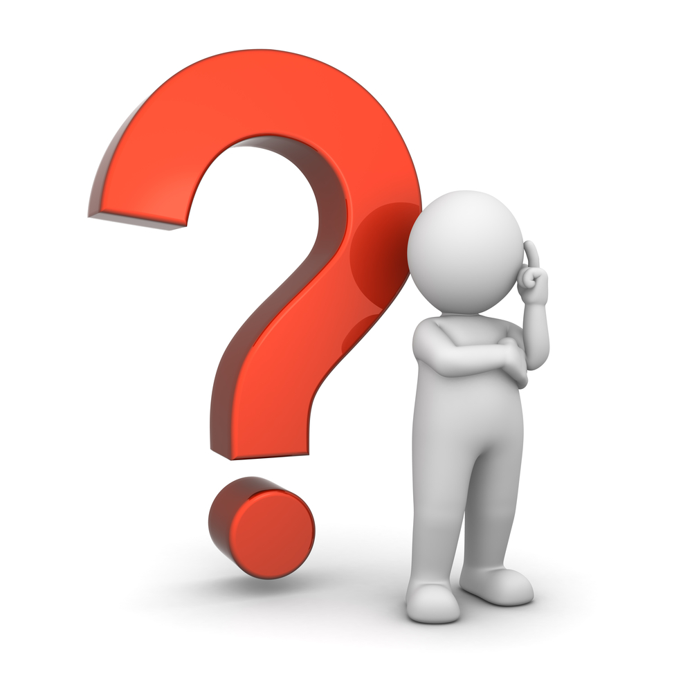
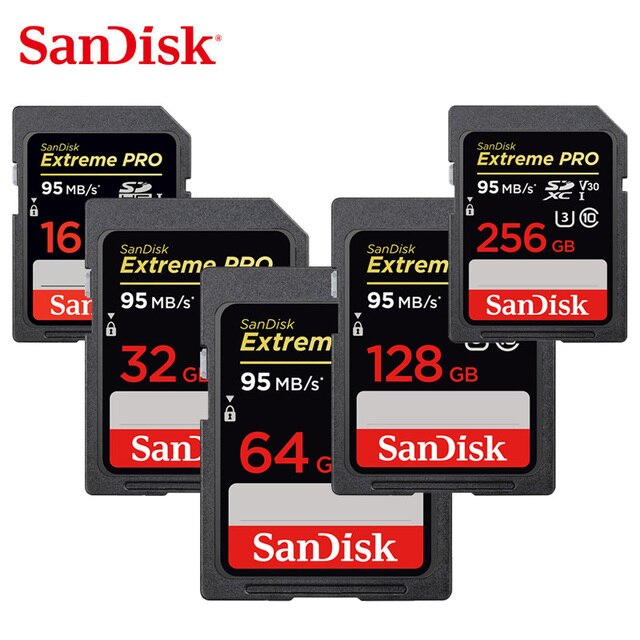

What Is the Bare Minimum Gear Needed for Photography?
Camera. If you buy a dedicated camera (rather than a phone), pick one with interchangeable lenses so that you can try out different types of photography more easily. Read reviews, but don’t obsess over them, because everything available today is pretty much equally good as its competition. Find a nice deal and move on.

Lenses. This is where it counts. For everyday photography, start with a standard zoom lens like a 24-70mm or 18-55mm. For portrait photography, pick a prime lens (one that doesn’t zoom) at 35mm, 50mm, or 85mm. For sports, go with a telephoto lens. For macro photography, get a dedicated macro lens. And so on. Lenses matter more than any other piece of equipment because they determine what photos you can take in the first place.
Post-processing software. One way or another, you need to edit your photos. It’s ok to start with software already on your computer, or software that comes with your camera. But in the long run, a dedicated program will do a better job. Adobe sells Lightroom and Photoshop as a bundle for $10/month, or you can buy standalone software from another company if you prefer; there are tons of options. Whatever you pick, stick with it for a while, and you’ll learn it quite well.

Everything else is optional, but can be very helpful.
A tripod. A landscape photographer’s best friend.
Bags. Get a shoulder bag for street photography, a rolling bag for studio photography, a technical hiking backpack for landscape photography, and so on.
Memory cards. Choose something in the 64-128 GB range to start. Get a fast card (measured in MB/second) if you shoot bursts of photos, since your camera’s memory will clear faster.
Extra batteries. Get at least one spare battery to start, preferably two. Off-brand batteries are usually cheaper, although they may not last as long or maintain compatibility with future cameras.
Polarizing filter. This is a big one, especially for landscape photographers. Don’t get a cheap polarizer or it will harm your image quality. I recommend the B+W Kaesemann filter (of the same thread size as your lens).
Flash. Flashes can be expensive, and you might need to buy a separate transmitter and receiver if you want to use your flash off-camera. But for genres like portrait photography or macro photography, they’re indispensable.
Better computer monitor. Ideally, you would get an IPS monitor for editing photos (which we’ve also written an article about). A color calibration device is also really helpful, so you know you’re editing the “correct” colors.

Cleaning kit. The top item is a microfiber cloth to keep the front of your lens clean. Also get a rocket blower to remove dust from your camera sensor more easily.
Other equipment. There are countless other photography accessories available, from remote shutter releases to GPS attachments, printers, and more. Don’t worry about these at first; you’ll realize over time if you need one.